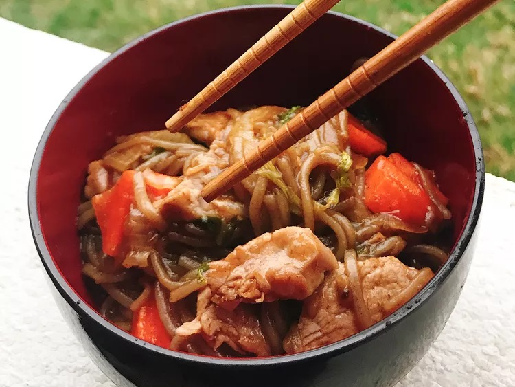

Yakisoba

Ingredients
- 4 (8 ounce) packages buckwheat soba noodles
- 2 tablespoons vegetable oil
- 1 pound pork tenderloin, cut against the grain in thin strips
- 2 cups carrots, cut into julienne strips
- 1 medium onion, cut into julienne strips
- 1 tablespoon freshly grated ginger
- 3 cloves garlic, minced
- ½ head napa cabbage, shredded
- ⅔ cup yakisoba sauce
- salt and ground black pepper to taste
- 4 tablespoons pickled red ginger (beni shoga), or to taste
- 4 tablespoons kizami nori (dried flaked aonori seaweed), or to taste
Method
- Bring a large pot of water to a boil. Cook soba in boiling water, stirring occasionally,
until noodles are tender yet firm to the bite, 5 to 8 minutes. Drain noodles and rinse
with cold water. Set aside.
- Heat oil in a wok over medium heat. Add pork and stir-fry with a pinch of salt and pepper,
about 5 minutes. Transfer meat to a plate, reserving oil in wok. Add carrots, onion, ginger,
and garlic to the wok and stir-fry for 3 to 4 minutes.
- Add cabbage to the wok and stir-fry briefly, about 1 minute. Add drained soba noodles.
Pour in 1/2 the yakisoba sauce and stir-fry until noodles and vegetables are covered with
sauce, about 3 minutes. Return pork to the wok. Add additional sauce as desired.
Remove from heat.
- Garnish yakisoba with kizami nori and a small pile of beni shoga just before serving.